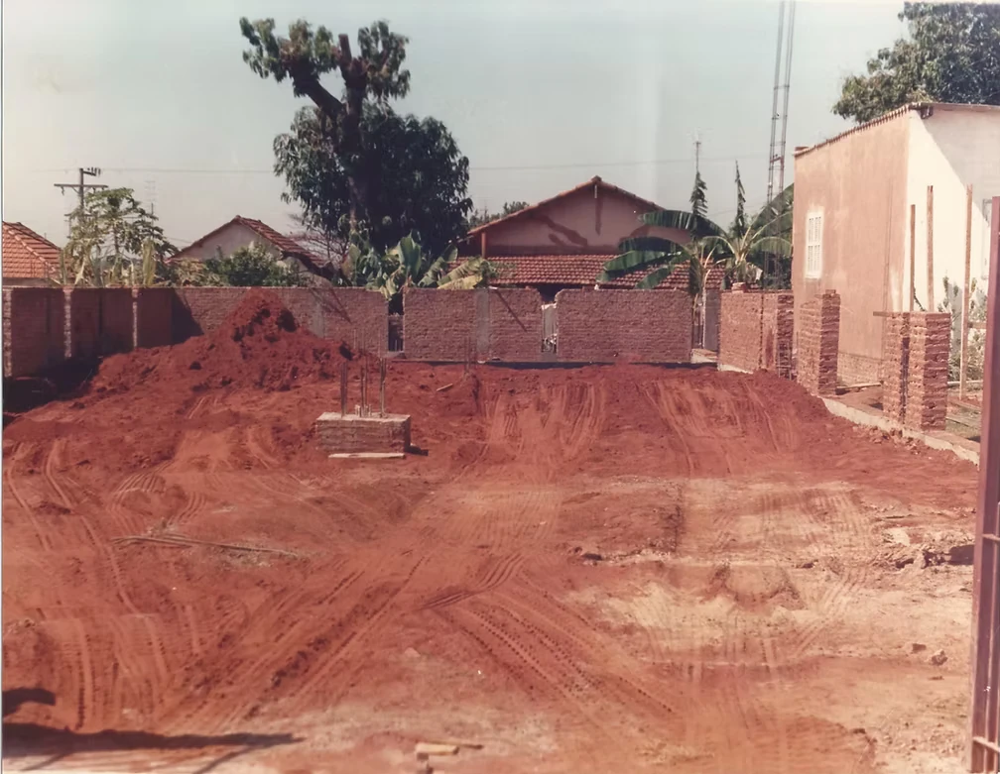
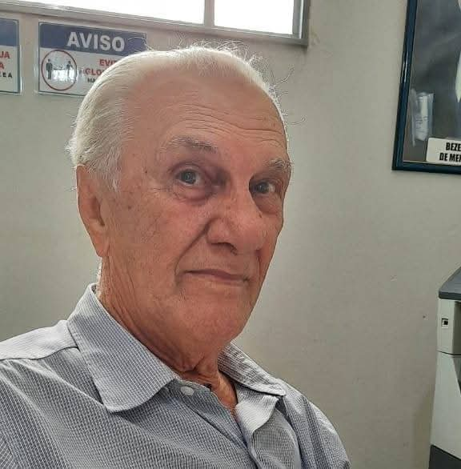

Segunda-feira
19:00hPalestra Pública seguida de Passe Magnético.
Um espaço simples e fraterno para ouvir palestras, receber o passe, estudar o Evangelho e caminhar juntos na prática do bem. Todas as atividades são gratuitas.
Escolha o melhor dia para nos visitar
Palestra Pública seguida de Passe Magnético.
Palestra Doutrinária e Orientação Espiritual após a palestra.
Estudo de O Evangelho Segundo o Espiritismo e Tratamento Espiritual.
Palestras, Reflexões e Tratamento Espiritual.
Estudo Sistematizado da Doutrina Espírita (ESDE).
Curso de Iniciação ao Espiritismo.
Um passo a passo simples para você se sentir em casa desde o primeiro dia
Procure chegar 10 a 15 minutos antes do horário. Não é necessário agendamento nem vínculo prévio.
Sente-se à vontade no salão para ouvir a prece inicial e a explanação sobre o Evangelho e o Espiritismo.
Após a palestra, quem desejar é convidado a receber o passe espiritual em ambiente tranquilo e acolhedor.
Se precisar de escuta ou orientação, nossa equipe está à disposição. Todas as atividades são gratuitas.
Deslize para conhecer um pouco do nosso espaço e da nossa história

Nossa Casa em Bebedouro/SP — fundada em 15/08/1978

Espaço de acolhimento e estudo

Nossa caminhada desde 1978

Convivência fraterna e estudo

Trabalho voluntário e acolhimento

Construção coletiva e serviço

Nossa Casa nasceu do propósito de servir com respeito, estudo sério e portas abertas a toda a comunidade de Bebedouro.
"Vinde a mim todos os que estais cansados e oprimidos, e eu vos aliviarei."Jesus Cristo
"Fora da caridade não há salvação" — ações simples feitas com o coração
Apoio mensal a cerca de 50 famílias cadastradas com alimentos essenciais não-perecíveis.
Roupas, calçados e utensílios a preços acessíveis, com renda revertida aos projetos da Casa.
Escuta acolhedora, reservada e orientação evangélica às terças-feiras (quinzenal), 19h30.
Acompanhe os encontros recentes do canal @CAE-RaphaelLatorre de onde estiver


Programação espírita 24 horas com palestras, músicas e conteúdo doutrinário para acompanhar o seu dia.
Ouça Agora